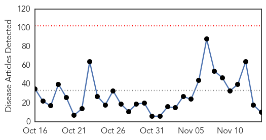

West Nile Virus
30-Day Web Trend
0 alerts, 0 warnings

30-Day Twitter Trend
0 alerts, 0 warnings

Article Locations

Article Confidences

Top Articles:
-
No articles found for Nov 14, 2015
Top Tweets:
-
No tweets found for Nov 14, 2015
Ebola
30-Day Web Trend
0 alerts, 0 warnings

30-Day Twitter Trend
22 alerts, 6 warnings

Article Locations

Article Confidences

Top Articles:
- 0.998
- Ebola has gone underground – will it return to Sierra Leone?
- 0.996
- When Will The True Ebola Heroes Be Recognised? -By Moshood Isah
- 0.994
- Ebola remains in Guinea, where the outbreak began
- 0.967
- Building Defences Against Future Ebola Outbreaks
- 0.967
- A system that failed
- 0.963
- Brazilian tests negative for Ebola virus a second time
- 0.848
- U.S. Applying Strict Ebola Screening At 5 Airports
- 0.821
- Migration Crisis Becomes Public Health Crisis
- 0.740
- Meet the woman who took 51 Ebola orphans into her own home
- 0.640
- ‘Merciless,’ spread of Ebola in Liberia must be stopped in its tracks, Security Council told
Top Tweets:
- 0.998
- Public Health Advisory Ebola Guidance - https://t.co/h2ZhZZux63 ebola
- 0.997
- Liberia after Ebola - https://t.co/yknKHOaeRO ebola
- 0.996
- FREE Ebola Virus Vaccines U.S. Hospitals offering free Ebola to people want FREE Ebola? INFO https://t.co/fjWTZJsteV
- 0.995
- LF Hpal Ebola Cleave 2300cr - https://t.co/yD15gP4Zv0 ebola
- 0.995
- Ebola. - https://t.co/m0UfbmIFmY ebola
- 0.995
- Ebola Robina - https://t.co/4tjjzNab8i ebola
- 0.994
- EL EBOLA 2 - https://t.co/zGxuxTI6jV ebola
- 0.993
- Interferon-γ Inhibits Ebola Virus Infection. - https://t.co/CROdN8Bb6z ebola
- 0.989
- Weekly Digest: Meningitis A vaccine success; Sierra Leone declared free of Ebola - https://t.co/37vHlFCl8Y ebola
- 0.989
- A Closer Look: The Ebola Outbreak - https://t.co/HadoCWYKmo ebola
- 0.988
- Ebola outbreak: A system that failed - https://t.co/AuiogfvvoR ebola
- 0.986
- Sierra Leone Is Officially Ebola-Free - https://t.co/eMph10cvyf ebola
- 0.986
- Guinea releases last 68 people from Ebola quarantine - https://t.co/fv1o695v4N ebola
- 0.985
- Guinea releases last 68 people from Ebola quarantine - Reuters https://t.co/l4tNynyFtI ebola EVD
- 0.985
- Guinea releases last 68 people from Ebola quarantine - Reuters https://t.co/f5lM4IlbGu ebola EVD
- 0.984
- Guinea releases last 68 people from Ebola quarantine - Yahoo News https://t.co/9yj6P2o0kB ebola EVD
- 0.983
- Ebola illness ATTACKED ME! - https://t.co/Ss7VmaaY3S ebola
- 0.980
- Columbia University researchers map Ebola spread in Sierra Leone - https://t.co/lERq8s0taP ebola
- 0.978
- Brazilian tests negative for Ebola virus a second time - https://t.co/bTtCe4AsW9 ebola
- 0.978
- Brazilian tests negative for Ebola virus a second time - https://t.co/HGjQycB65P ebola
- 0.976
- FREE Ebola Virus Vaccines U.S. Hospitals offering free Ebola would you? INFO https://t.co/fjWTZJsteV DemDebate
- 0.975
- Ebola drug has success on human patient - https://t.co/UeTP6U1Lvc ebola
- 0.975
- Ebola drug has success on human patient - https://t.co/3s6NtG7lak ebola
- 0.972
- Rolf Harris 'Treated In Ebola Ward' - https://t.co/I3AlOb7Ctd ebola
- 0.968
- US-based NGO Organization Praises End of Ebola in Sierra Leone - https://t.co/85VDMffFfK ebola
- 0.967
- Ebola Vaccine Trials Stirring Up Apprehension in Cameroon - https://t.co/BWeWWqG5it ebola
- 0.963
- Computer model outlines spread of Ebola - https://t.co/kA7NFnyikj ebola
- 0.957
- Parliament approves Ebola vaccine trials in the country - https://t.co/DE1NgWE4fN ebola
- 0.955
- Fighting Extremes: From Ebola to ISIS - https://t.co/Simy049id4 ebola
- 0.946
- Rucka Rucka Ali Ebola La La - https://t.co/mxDKh3PjCW ebola
- 0.945
- Declaration of Ebola-free after killing almost 4000 in Sierra Leone - https://t.co/xPtqTMTpA3 ebola
- 0.941
- Sierra Leone Joins Liberia in Beating Ebola, but Still Needs Your Help - https://t.co/E04CORr4Kt ebola
- 0.926
- Hazmat team called in; Ebola ruled out - https://t.co/WZJVRF74Vl ebola
- 0.926
- Hazmat team called in; Ebola ruled out - https://t.co/MJDKmXBe3o ebola
- 0.906
- Team helps Sierra Leone to be declared Ebola free - https://t.co/Uo4vB0zah2 ebola
- 0.905
- Baby Nubia the last known Ebola patient in Guinea being treated by MSF - Irish Independent https://t.co/5YxFjoKaio ebola EVD
- 0.905
- how about some west African refugees as well and some ebola survivors too with Ebola STD
- 0.897
- Brazillian man tested negative for Ebola after trip from Guinea - https://t.co/ddVdTYjzHu ebola
- 0.893
- About Ebola: Hood River doctor tells of her 2015 experiences in west Africa - https://t.co/aeAf5d6rZ5 ebola
- 0.893
- About Ebola: Hood River doctor tells of her 2015 experiences in west Africa - https://t.co/DXt5lJenvV ebola
- 0.879
- Brazilian man being tested for Ebola; results in 24 hours - https://t.co/xxQ3y5uV1J ebola
- 0.868
- Brazil tests man for Ebola, puts others under observation - https://t.co/B1xeKJlSNE ebola
- 0.863
- Ebola has gone underground – will it return to Sierra Leone? - https://t.co/fi8SzRHSi3 ebola
- 0.840
- Illegal In Germany Shows Signs Of Ebola - Crisis Worsens - https://t.co/88dWSSr3NE ebola
- 0.831
- Weekly scorecard - https://t.co/ixxMDGhsFc ebola
- 0.829
- Brazil Man Tested for Ebola; Others Under Observation - https://t.co/1Kuky6Shxu ebola
- 0.828
- Guinea releases last 68 people from Ebola quarantine - Reuters https://t.co/z72DdOhWmr
- 0.828
- Guinea releases last 68 people from Ebola quarantine - Reuters https://t.co/RXLPLhrBVG
- 0.819
- Guinea releases last 68 people from Ebola quarantine - Yahoo News https://t.co/l8yNcWA0t9
- 0.788
- RT: Guinea releases last 68 people from Ebola quarantine https://t.co/TghJUaSyJ5
Showing top 50 tweets...